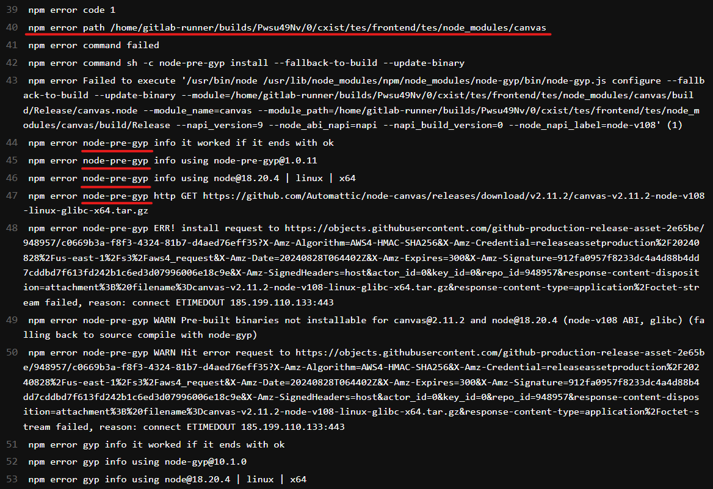

postinstall error
| 环境 | 版本 |
|---|---|
| windows | 10 |
| node | 20.14.0 |
| pnpm | 9.4.0 |
当第一次执行 pnpm install 或 npm install 时 PNPM报错：npm postinstall failed command not found node ./scripts/postinstall.js
解决方案1：
运行命令rimraf .\node_modules\npm cache clean --forcepnpm store prune
解决方案2：
找到报错的插件所在的 package.json 文件
把 package.json 中的 scripts.postinstall 的命令找个地方记录下来，并修改命令为
pnpm --version然后执行一次
pnpm install完成后将会发现报错的插件 postinstall 执行成功挨个进入报错的插件所在的 package.json 文件层级
挨个执行该插件原有的 postinstall 命令
pnpm dev启动成功。。。
node-pre-gyp error
| 插件 | 版本 |
|---|---|
| linux | 13.6.0 |
| node | 18.20.4 |
| npm | 10.7.0 |
当第一次执行 npm install 时，有时会出现 npm error node-pre-gyp。

原因
https://github.com/mozilla/pdf.js#user-content-getting-the-code
On MacOS M1/M2 you may see some node-gyp-related errors when running npm install. This is because one of our dependencies, “canvas”, does not provide pre-built binaries for this platform and instead npm will try to build it from source. Please make sure to first install the necessary native dependencies using brew: https://github.com/Automattic/node-canvas#compiling.
解决方案：
参考 https://github.com/Automattic/node-canvas#compiling 给的解决办法，给环境添加图片插件支持。
移除项目中所有与 canvas (项目名: node-canvas) 相关的插件。